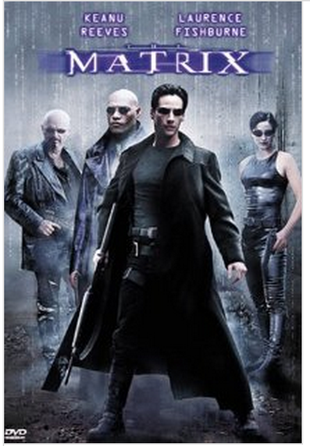
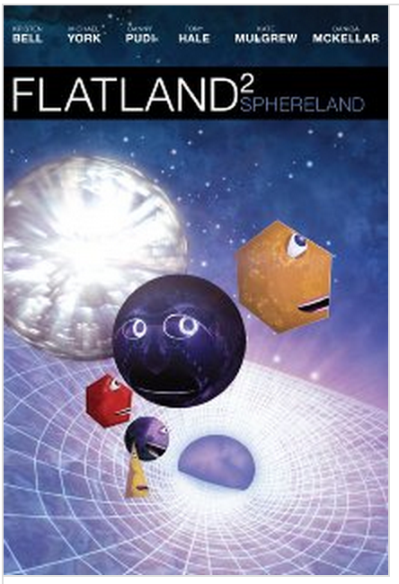
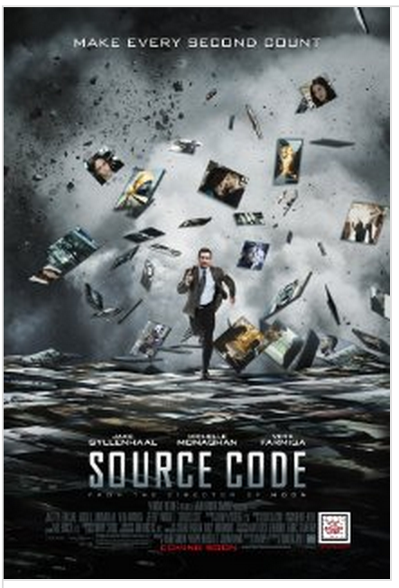

Top 10 Movies for Programmers
Different areas sometimes share the same concepts. A lot of concepts of computer programming have been used in movies. Some of them are just so cool, they even help developers to understand some programming concepts. The following are my list of top 10 movies and my understanding of programming concepts they use. A collection of movies from comments are also summarized at the end.
1. The Matrix(1999)
Concepts: online/offline, recursion, loop, matrix, etc.
This movie is revolutionary. The end of one civilization is the start of another. There are some movies that are similar like this one later.

2. Loopers(2012)
Concept: Loop.
while(true){ makeALifeAgainAndAgain(); } |
If life runs into an endless loop, how to break the loop?
3. Tron: Legacy(2010)
Many computer scientists of a certain age would agree that this movie kind of lead them into computing(or War Games).
4. Next(2007)
Concept: Recursion.
This movie uses the concept of recursion, especially in the final searching part. It is a recursive search on a tree.
5. Final Destination 1, 2, 3, 4, 5
Concept: if else jump
OR
Somebody sb = new Somebody(); try{ makeDead(sb); } exception(e) { //not dead; } finally { changeMethodAndMakeDead(sb) } |
6. Inception(2010)
Concept: Recursion.
7. Cloud Atlas(2012)
Concept: Parallelism.
8. Flatland 2: Sphereland (2012)
Concept: 2-dimension.

9. Source Code (2011)
Concept: Reentrancy.
I'm curious about where the source code is running. If the machine is powered off, then the other world will disappear?

10. Triangle (2009)
Concept: Dead loop.
The movies above are my favorites. There are surely others good movies for programmers. If you leave comments, I will combine them later here. It would be so great if you can mention the concept relevant to programming(e.g., recursion).
More Great Movies from Comments
| Hackers (1995) | Evil system admin |
| Office Space (1999) | Virus |
| Wargames (1983) | Back door |
| Tron (1982) | Virtual reality |
| Deja Vu (2006) | Problems are often seen before, but finally lead to catastrophe. |
| Pi (1998) | |
| Groundhog Day (1993) | Infinite Loop |
| Antitrust (2001) | |
| Pirates of Silicon Valley (1999) | Apple and Microsoft |
| Colossus: The Forbin Project (1970) | Supercomputer |
| The Social Network (2010) | Social network |
| Ghost in the Shell (1995) | Matrix |
| The 13th Floor (1988) | Virtual reality |
| Moon (2009) | Clone |
| Takedown (2000) | |
| A Beautiful Mind (2001) | Mathematics |
<pre><code> String foo = "bar"; </code></pre>
-
saurabh
-
saurabh
-
Daemon
-
Joshua Belisle
-
MCL Editorial Team
-
Speedy Marsh
-
David Refoua
-
Josh Watson
-
Chris
-
George Anderson
-
DannyB2
-
hujik
-
Max Nomad
-
io_Outlaw_io
-
Joss Macallan
-
azar
-
H. J. Im
-
ryanlr
-
Joss Macallan
-
Andy
-
Xxiii
-
Alex Liu
-
macs
-
Felipe
-
Oded Arbel
-
Chris
-
khan
-
Ryan
-
Andrew Lee
-
Channing Walton
-
Dave
-
PavelRudensky
-
José Cruz